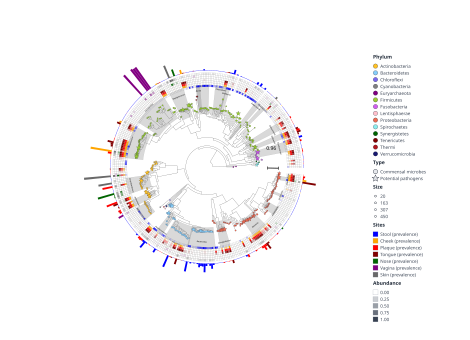

Data Integration, Manipulation and Visualization of Phylogenetic Trees
Welcome to the complete Python edition of Guangchuang Yu's treedata-book, powered by ggtree-py (v0.1.4; GitHub · PyPI), a Python port of the R/Bioconductor ggtree package (v4.3.2). This interactive online book reproduces all major workflows across Newick/Nexus, BEAST, RAxML, PAML CodeML, EPA/pplacer, gheatmap, msaplot, geom_facet, geom_motif, vector PhyloPic silhouettes, circular geom_fruit rings, and hover-interactive SVG tooltips—running purely in Python with zero external runtime dependencies beyond NumPy.
Structure of the Book
Part I: Tree Data I/O & Manipulation
Parsing Newick, BEAST, RAxML, CodeML, and .jplace data structures; joining trait metadata with %; tidy manipulation and tree export.
Part II: Visualization & Annotation
Phylogram, circular, fan, and unrooted layouts; clade highlights and links; clade exploration; gheatmap, msaplot, geom_motif, and PhyloPic silhouettes.
Part III: ggtree Extensions
Clustering dendrograms, ggdensitree ensembles, ggdoubletree tanglegrams, ggtreeExtra::geom_fruit radial rings, interactive SVG tooltips, and Patchwork grids.
Part IV & Appendices
Publication-ready integrative case studies, frequently asked questions, complete API reference, and searchable Master Figure Index.
Quick Start in Python
Every snippet across this book uses native Python syntax closely paralleling R's ggplot2 + ggtree grammar:
from ggtree import read_beast, system_file, ggtree, aes, geom_range, geom_tiplab, theme_tree2, hexpand
beast = read_beast(system_file("extdata", "MCC_FluA_H3.tree"))
p = (
ggtree(beast, aes(color="rate"))
+ geom_range(range="height_0.95_HPD", color="red", alpha=0.55)
+ geom_tiplab(size=2.3)
+ hexpand(0.28)
+ theme_tree2()
)
p.save("flu_h3_tree.svg", width=8, height=6)Selected Book Highlights

▶ Show / Hide Python Code read_treeggtreegeom_tiplabgeom_label
tr = read_tree(text="((t2:0.04,t1:0.34):0.89,(t5:0.37,(t4:0.03,t3:0.67):0.9):0.59);")
p = (
ggtree(tr, size=2)
+ geom_tiplab(align=True, linetype="dotted", linesize=0.5, size=4.2)
+ geom_label(aes(x="branch", label="branch.length"), size=3.4)
+ hexpand(0.12)
)
p

▶ Show / Hide Python Code read_beastread_tablegheatmapscale_fill_manual
from ggtree import (
read_beast, read_table, system_file, ggtree, geom_treescale,
geom_tiplab, gheatmap, scale_fill_manual, scale_x_ggtree,
theme_tree2, plot_list,
)
beast_tree = read_beast(system_file("extdata", "MCC_FluA_H3.tree"))
genotype = read_table(system_file("extdata", "Genotype.txt"), sep="\t", header=True, row_names=0)
p = ggtree(beast_tree, mrsd="2013-01-01") + geom_treescale(x=2008, y=1, offset=2) + geom_tiplab(size=2)
p1 = (
gheatmap(p, genotype, offset=5, width=0.5, font_size=3, colnames_angle=-45, hjust=0)
+ scale_fill_manual(
breaks=["HuH3N2", "pdm", "trig"],
values=["steelblue", "firebrick", "darkgreen"],
name="genotype",
)
)
p_b = ggtree(beast_tree, mrsd="2013-01-01") + geom_tiplab(size=2, align=True, linesize=0.5) + theme_tree2()
p2 = gheatmap(p_b, genotype, offset=8, width=0.6, colnames=False) + scale_x_ggtree()
plot_list(p1, p2, ncol=1, tag_levels="A")

▶ Show / Hide Python Code bionjread_tablegeom_facetgeom_motif
from ggtree import (
read_table, system_file, bionj, ggtree, aes, geom_tiplab, xlim_tree,
geom_facet, geom_motif, scale_fill_brewer, theme, element_blank, facet_widths,
)
example_genes = read_table(system_file("extdata", "TDbook", "example_genes.tsv"), header=True, sep="\t")
genomes = []
for g_name in example_genes["molecule"].tolist():
if g_name not in genomes:
genomes.append(g_name)
gene_sets = {
g_name: set(example_genes[example_genes["molecule"] == g_name]["gene"].tolist())
for g_name in genomes
}
n = len(genomes)
d = [[0.0] * n for _ in range(n)]
for i in range(n):
for j in range(i):
gi, gj = gene_sets[genomes[i]], gene_sets[genomes[j]]
jacc = len(gi & gj) / max(len(gi | gj), 1)
d[i][j] = d[j][i] = 1.0 - jacc
tree = bionj(d, labels=genomes)
p = (
ggtree(tree, branch_length="none")
+ geom_tiplab(size=3.0)
+ xlim_tree(5.5)
+ geom_facet(
mapping=aes(xmin="start", xmax="end", fill="gene"),
data=example_genes,
geom=geom_motif,
panel="Alignment",
on="genE",
label="gene",
align="left",
)
+ scale_fill_brewer(palette="Set3", name="gene")
+ theme(strip_text=element_blank())
)
facet_widths(p, widths=[1, 2])

▶ Show / Hide Python Code read_treeread_tablefactornodeid
import re
from ggtree import (
system_file, read_tree, read_table, factor, nodeid, DataFrame,
ggtree, aes, geom_hilight, geom_cladelab, geom_star,
scale_fill_manual, scale_starshape_manual, scale_size_continuous,
new_scale_fill, geom_fruit, geom_tile, geom_bar,
scale_alpha_continuous, geom_treescale, guide_legend, theme,
)
tree = read_tree(system_file("extdata", "TDbook", "tree_hmptree.nwk"))
dat1 = read_table(system_file("extdata", "TDbook", "df_tippoint.tsv"))
dat2 = read_table(system_file("extdata", "TDbook", "df_ring_heatmap.tsv"))
dat3 = read_table(system_file("extdata", "TDbook", "df_barplot_attr.tsv"))
site_levels = [
"Stool (prevalence)", "Cheek (prevalence)", "Plaque (prevalence)",
"Tongue (prevalence)", "Nose (prevalence)", "Vagina (prevalence)",
"Skin (prevalence)",
]
dat2["Sites"] = factor(dat2["Sites"], levels=site_levels)
dat3["Sites"] = factor(dat3["Sites"], levels=site_levels)
long_labs = [lb for lb in (tree.node_label or []) if lb and len(lb) > 4]
nodeids = nodeid(tree, long_labs)
nodelab = [re.sub(r"[.0-9]", "", lb) for lb in long_labs]
poslist = [
1.6, 1.4, 1.6, 0.8, 0.1, 0.25, 1.6, 1.6, 1.2, 0.4,
1.2, 1.8, 0.3, 0.8, 0.4, 0.3, 0.4, 0.4, 0.4, 0.6,
0.3, 0.4, 0.3,
]
nodedf = DataFrame({"node": nodeids})
labdf = DataFrame({"node": nodeids, "label": nodelab, "pos": poslist})
p = (
ggtree(tree, layout="fan", size=0.15, open_angle=5)
+ geom_hilight(
data=nodedf, mapping=aes(node="node"),
extendto=6.8, alpha=0.3, fill="grey", color="grey50", size=0.05,
)
+ geom_cladelab(
data=labdf, mapping=aes(node="node", label="label", offset_text="pos"),
hjust=0.5, angle="auto", barsize=0.0, horizontal=False,
fontsize=1.4, fontface="italic",
)
)
p = (
p % dat1
+ geom_star(
mapping=aes(fill="Phylum", starshape="Type", size="Size"),
starstroke=0.1,
)
+ scale_fill_manual(
values=[
"#FFC125", "#87CEFA", "#7B68EE", "#808080", "#800080",
"#9ACD32", "#D15FEE", "#FFC0CB", "#EE6A50", "#8DEEEE",
"#006400", "#800000", "#B0171F", "#191970",
],
guide=guide_legend(
keywidth=0.5, keyheight=0.5, order=1,
override_aes={"starshape": 15},
),
na_translate=False,
)
+ scale_starshape_manual(
values=[15, 1],
guide=guide_legend(keywidth=0.5, keyheight=0.5, order=2),
na_translate=False,
)
+ scale_size_continuous(
range=(1.0, 2.5),
guide=guide_legend(
keywidth=0.5, keyheight=0.5, order=3,
override_aes={"starshape": 15},
),
)
)
p = (
p
+ new_scale_fill()
+ geom_fruit(
data=dat2, geom=geom_tile,
mapping=aes(y="ID", x="Sites", alpha="Abundance", fill="Sites"),
color="grey50", offset=0.04, size=0.02,
)
+ scale_alpha_continuous(
range=(0.0, 1.0),
guide=guide_legend(keywidth=0.3, keyheight=0.3, order=5),
)
+ geom_fruit(
data=dat3, geom=geom_bar,
mapping=aes(y="ID", x="HigherAbundance", fill="Sites"),
pwidth=0.38, orientation="y", stat="identity",
)
+ scale_fill_manual(
values=["#0000FF", "#FFA500", "#FF0000", "#800000", "#006400", "#800080", "#696969"],
guide=guide_legend(keywidth=0.3, keyheight=0.3, order=4),
)
+ geom_treescale(fontsize=2.0, linesize=0.3, x=4.9, y=0.1)
+ theme(legend_position=(0.93, 0.5), legend_title_size=6.5, legend_text_size=4.5)
)
p